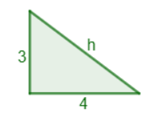
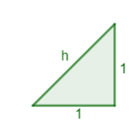
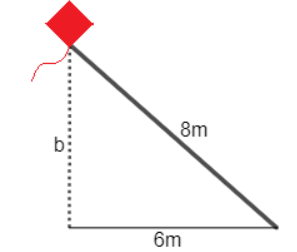
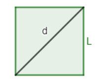

<body>

    <header>
        <h1>Prueba de matemática</h1>
        <h2>Objetivo: Aplicar la ecuación</h2>
    </header>
    <main>
        <section>
            <div class="pregunta">
                <h1> Pregunta 1</h1>
                <h2> Calcular cuánto mide la hipotenusa de un triángulo rectángulo con cuyos catetos miden 3 y 4 centímetros. </h2>
                
                <article>
                    <div><input type="radio" name="respuesta1" required autocomplete="none"><label for="respuesta">5</label></div>
                    <div><input type="radio" name="respuesta1" required autocomplete="none"><label for="respuesta">6</label></div>
                    <div><input type="radio" name="respuesta1" required autocomplete="none"><label for="respuesta">7</label></div>
                    <div><input type="radio" name="respuesta1" required autocomplete="none"><label for="respuesta">8</label></div>
                </article>
            </div>

            <div class="pregunta">
                <h1> Pregunta 2</h1>
                <h2> ¿Cuánto mide la hipotenusa de un triángulo rectángulo cuyos catetos miden 1? </h2>
                
                <article>
                    <div><input type="radio" name="respuesta2" required autocomplete="none"><label for="respuesta">5</label></div>
                    <div><input type="radio" name="respuesta2" required autocomplete="none"><label for="respuesta">6</label></div>
                    <div><input type="radio" name="respuesta2" required autocomplete="none"><label for="respuesta">7</label></div>
                    <div><input type="radio" name="respuesta2" required autocomplete="none"><label for="respuesta">8</label></div>
                </article>
               </div>

            <div class="pregunta">
                <h1> Pregunta 3</h1>
                <h2> ¿A qué altura está la cometa de Ana si su cuerda mide L=8 metros y tendría que moverse 6 metros para situarse debajo de ella?</h2>
                
                <article>
                    <div><input type="radio" name="respuesta3" required autocomplete="none"><label for="respuesta">5</label></div>
                    <div><input type="radio" name="respuesta3" required autocomplete="none"><label for="respuesta">6</label></div>
                    <div><input type="radio" name="respuesta3" required autocomplete="none"><label for="respuesta">7</label></div>
                    <div><input type="radio" name="respuesta3" required autocomplete="none"><label for="respuesta">8</label></div>
                </article>
                </div>

            <div class="pregunta">
                <h1> Pregunta 4</h1>
                <h2> ¿Cuánto miden los lados de un cuadrado cuya diagonal mide d=2? </h2>
                
                <article>
                    <div><input type="radio" name="respuesta4" required autocomplete="none"><label for="respuesta">5</label></div>
                    <div><input type="radio" name="respuesta4" required autocomplete="none"><label for="respuesta">6</label></div>
                    <div><input type="radio" name="respuesta4" required autocomplete="none"><label for="respuesta">7</label></div>
                    <div><input type="radio" name="respuesta4" required autocomplete="none"><label for="respuesta">8</label></div>
                </article>
                </div>
        </section>
        <div class="login-box">
            <input type="submit" value="Enviar">
        </div>
    </main>
</body>